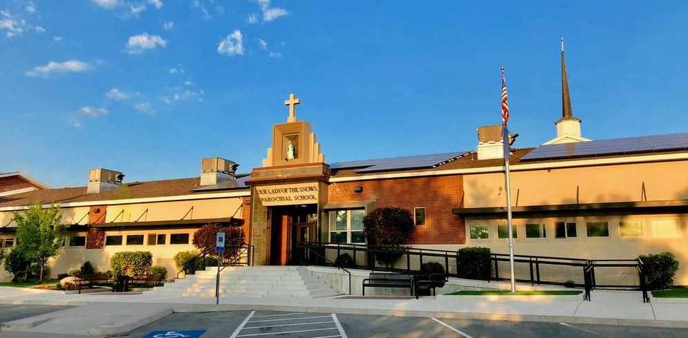
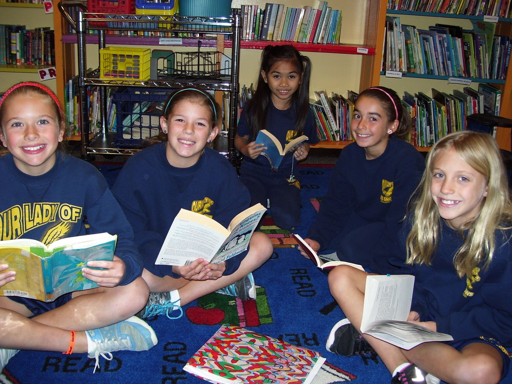
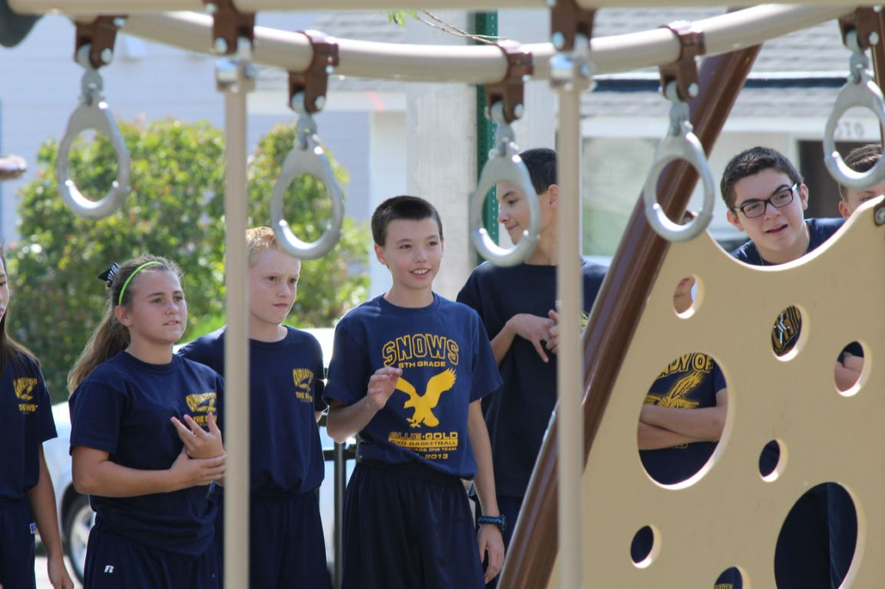
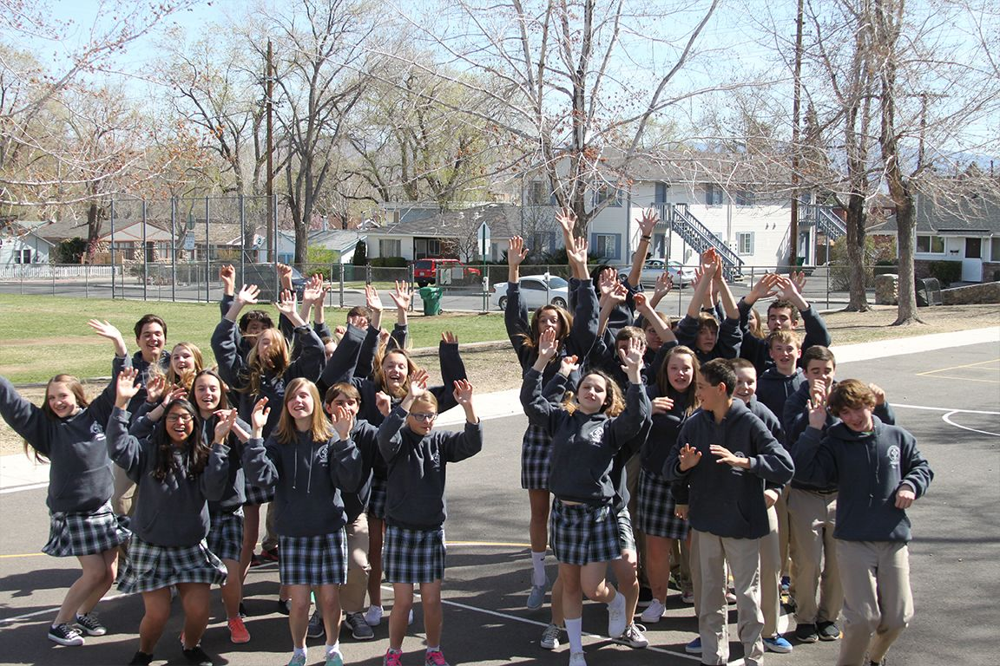
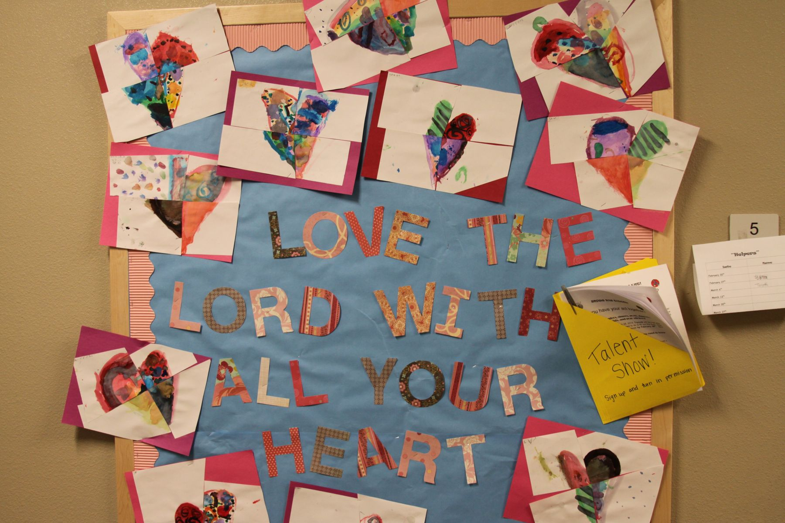
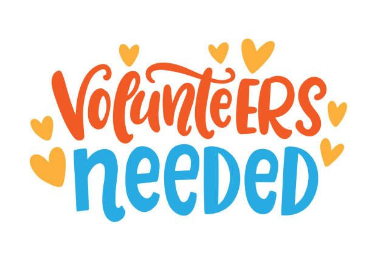

Faith. Knowledge.Leadership. Service.
Inspired by our Catholic Faith, Our Lady of the Snows School guides and nurtures students to become young leaders who love God, love learning and love their neighbor.

A school that welcomes all and serves all.
“We are a school that welcomes all and serves all. We strive to create a learning environment that recognizes the whole child.”
Our Lady of the Snows strives to nurture the whole child — spiritually, physically and intellectually. Our Catholic values guide all aspects of our school life, creating a learning environment that respects the dignity of every individual.
Four pillars. One calling.
Every Snows student grows in Faith, Knowledge, Leadership and Service. Hover or tap a card to reveal what each promise means.
Faith
I choose to have a personal relationship with God.
Faith
- I know the prayers, Traditions, and teachings of the Catholic church
- I make choices that reflect the Gospel message
- I honor Mary as our Blessed Mother
Knowledge
I choose to always grow and learn.
Knowledge
- I demonstrate competence in arts and sciences
- I demonstrate critical thinking and problem solving skills
- I demonstrate the ability to listen, speak, and write clearly
Leadership
I choose to be a positive influence in our community.
Leadership
- I model virtuous behavior
- I take personal responsibility
- I inspire others to be their best
Service
I choose to put our faith into action.
Service
- I use time and talent for the good of others
- I take responsibility for the needs of others, locally and globally
- I pray
↻ HOVER OR TAP TO TURN
Life at Our Lady of the Snows

Academics
Our Lady of the Snows School inspires students to love learning and challenges them to reach their highest potential.
Learn more
Student Life
Snows students are active members of a faith-based community that welcomes and serves all.
Learn more
New Parents
Parents are a vital part of our school community — partnering with parents achieves the best learning outcomes for our students.
Learn more
Whole Child
Our Lady of the Snows strives to nurture the whole child; spiritually, physically and intellectually.
Learn moreThe miracle of summer snow
Our school takes its name from one of the oldest titles of the Blessed Mother. According to tradition, in the fourth century a Roman couple prayed to know how to honor Mary with their gifts. On a summer night in August, snow miraculously fell on Rome’s Esquiline Hill, marking the place where the Basilica of St. Mary Major — Santa Maria Maggiore — would be built.
At Snows we celebrate her feast each year, reflect on her story during Catholic Schools Week, and honor our Blessed Mother with a May Crowning every spring.
Our Lady of the Snows
What’s happening at Snows
9th – 12th Grade Upcoming Events
Important upcoming events and information for families of students heading into 9th – 12th grade.
Read More →The Traveling Mary is a great tradition we have at School.
It brings the Faith based aspect of our school into your home…
Read More →
Service Hour Opportunity – Next Thursday, March 5
Still looking for a way to earn service hours? On Thursday, March 5…
Read More →Hats Off to Reading
Read Across America week starts March 9th here at OLS!…
Read More →Upcoming events
Weekly Mass every Wednesday at 8:45am — families are always warmly invited.
Parent Conferences
Friday, October 16, 2026Parent Conferences
Friday, October 23, 2026End of Q1
Friday, October 23, 2026Make-up Pictures
Tuesday, October 27, 2026Parent Conferences
Friday, October 30, 2026Nevada Day - No School
Friday, October 30, 2026Veterans Day - No School
Wednesday, November 11, 2026Thanksgiving Break
Monday, November 23, 2026Deck the Halls
Tuesday, December 1, 20268th Grade Interviews
Thursday, December 3, 2026Christmas Break
Monday, December 21, 2026New Year’s Day - No School
Friday, January 1, 2027End of Q2
Friday, January 15, 2027MLK Jr. Day - No School
Monday, January 18, 2027MAP Testing
Tuesday, January 19, 2027Catholic Schools Week
Sunday, January 24, 2027Presidents’ Day - No School
Monday, February 15, 2027End of Q3
Friday, March 19, 2027Triduum Retreat
Thursday, March 25, 2027Good Friday - No School
Friday, March 26, 2027Easter Sunday
Sunday, March 28, 2027Spring Break
Monday, March 29, 2027Kinder/8th Grade Pictures
Tuesday, April 20, 2027Mother’s Day Mass
Wednesday, May 5, 2027MAP Testing
Monday, May 10, 20278th Grade Celebration
Thursday, May 27, 2027Memorial Day - No School
Monday, May 31, 20278th Grade Graduation
Tuesday, June 1, 2027Kinder Graduation
Wednesday, June 2, 2027Last Day of School
Thursday, June 3, 2027Loved by Snows families
My husband and I are very happy with Our Lady of the Snows School. Our 2 children love it and are learning a lot. The principal is very involved with the children and the teachers and staff are wonderful!
— Snows ParentWe are very happy at Our Lady of the Snows. My wife and I were recommended by many families that are presently attending and have graduated. We are grateful to have found OLS.
— P. BertoneMy three children graduated from this school and would recommend it to anyone. The teachers, staff and principal are fantastic.
— Snows ParentInspired by our Catholic Faith, Our Lady of the Snows School guides and nurtures our students to become young leaders who love God, love learning and love their neighbor.
— Our MissionBuilding the new Snows Family Center
A new Parish Center to welcome, serve, build, form and continue our mission as Catholics — a gathering space, dedicated classrooms, a safe pick-up loop and more.
“Be steadfast, immovable, always abounding in the work of the Lord.” — 1 Corinthians 15:58
Your family’s place is waiting at Snows.
Registration for Kindergarten through 8th grade opened October 1, 2025. Schedule a personalized tour of our campus and discover all that Our Lady of the Snows School has to offer your student.